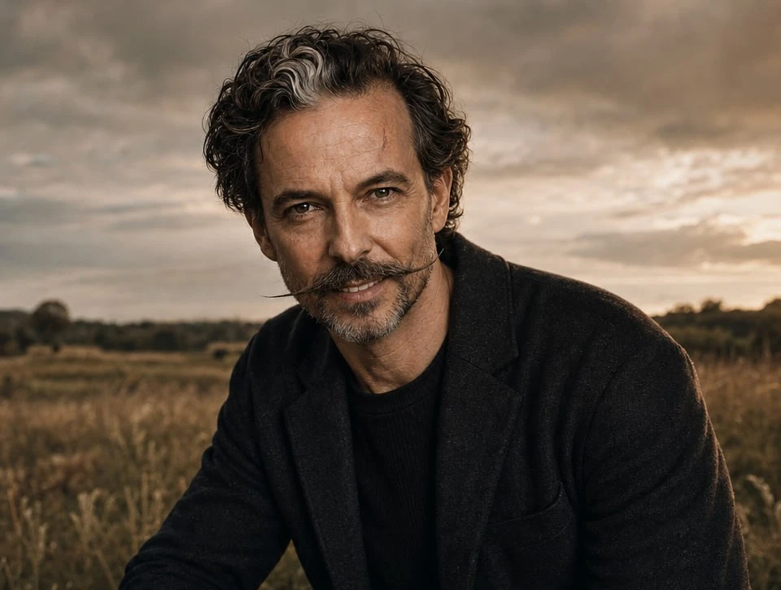
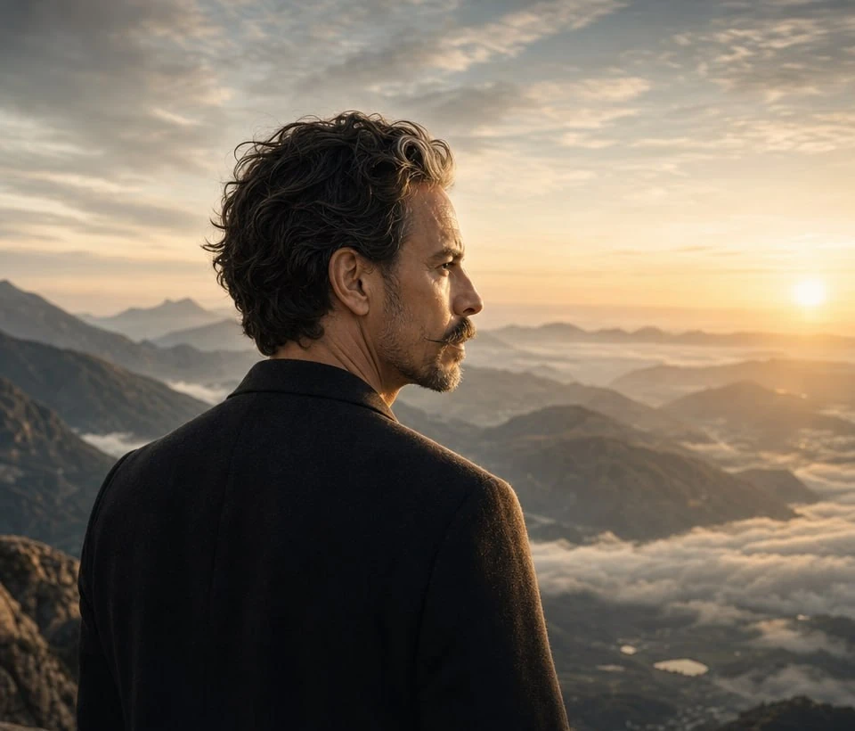
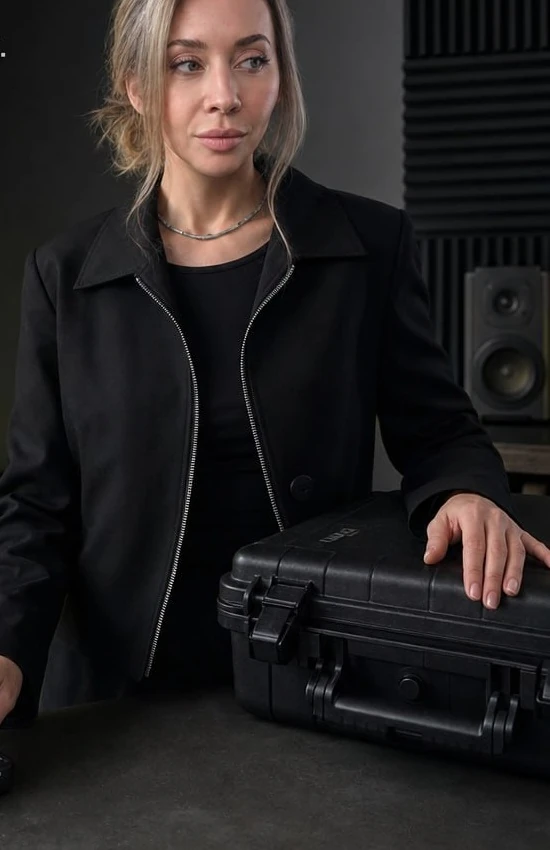

Смыслы
Позиционирование, аудитории, темы и голос бренда.
Социальные сети, в которых узнают вашу компанию. Создаём видео, карусели и посты — и адаптируем их для разных языковых аудиторий.
Посмотреть примеры ↓Внимание
к деталям.
OWAI — платформа и команда для создания контента. Соединяем маркетинговый подход, визуальное производство и возможности нейросетей.
Начинаем с того, как устроен ваш бизнес, кому вы говорите и чем отличаетесь. На этой основе выстраиваем контент, который сохраняет характер компании в разных форматах.
Позиционирование, аудитории, темы и голос бренда.
Персонажи, визуальные истории, видео и тексты.
Контент-план, согласование и работа с обратной связью.
Три серии — три разных способа рассказать историю. Листайте и открывайте слайды, чтобы рассмотреть детали.
ДЕМОНСТРАЦИОННЫЕ ПРИМЕРЫПерсонаж может стать частью визуального языка компании.
Разрабатываем образ, его стиль и сценарии появления. Используем его в публикациях и видео, чтобы контент воспринимался как продолжение одной истории.
Внешность, голос и использование образов людей согласуем до производства.


Из темы компании создаём разные форматы: объясняющий пост, карусель с аргументами, короткое видео с персонажем.
Так аудитория может познакомиться с одной идеей в удобном для неё формате.
Как устроен процесс ↗Пример того, как AI помогает работать с атмосферой и деталями. Для проекта подбираем визуальное направление под характер бренда.
Контент может говорить с разными языковыми группами — и сохранять единый характер компании.
Адаптируем текст, подачу и озвучку с учётом аудитории. Языки, каналы и порядок проверки согласуем перед запуском.
Посмотрите, как меняется подача: переключите язык в примере.

Помогаем рассказать её людям, которые говорят на вашем языке.
Сначала договариваемся о смыслах, затем — о регулярной работе.
У вас остаётся контрольИзучаем компанию, продукт, аудитории и материалы. Формулируем голос и визуальный характер бренда.
Определяем рубрики, форматы, языки и каналы. Согласуем, что и для кого будем рассказывать.
Готовим сценарии, тексты, визуалы и видео. Адаптируем выбранные темы под нужные аудитории.
Выстраиваем удобный порядок проверки и размещения. Состав работ и доступы фиксируем до запуска.
Смотрим на обратную связь и доступную статистику. Корректируем темы и подачу следующих материалов.
Вместе определяем источники и необходимые доступы. Учитываем ограничения на публикацию и при необходимости оформляем NDA.


При необходимости дополняем корпоративные социальные сети личными страницами основателя или команды.
Общая стратегия сохраняет связь с брендом, а у каждого автора остаются свой голос, темы и точка зрения.
Иллюстративные персонажи из примеров OWAI.Материалы о компании, продукте и аудитории, примеры желаемой подачи и человек, который помогает уточнять факты и согласовывать контент. Набор исходных материалов определим на встрече.
Не для каждого формата. Часть контента можно создавать с помощью AI персонажей и визуалов. Если в задаче важны реальные люди, объекты или события, обсудим необходимые съёмки и материалы.
Отталкиваемся от ваших аудиторий и задач. На встрече определим приоритетные языки, каналы и объём адаптаций, затем согласуем порядок редакторской проверки.
После знакомства с задачей фиксируем каналы, форматы, языки, объём производства и распределение ответственности. На этой основе готовим конкретное предложение и условия работы.
Ответьте на сообщение, в котором получили эту страницу, и договоримся о встрече. Обсудим аудитории и задачи — затем предложим состав работ и формат сотрудничества.
Сайт OWAI ↗